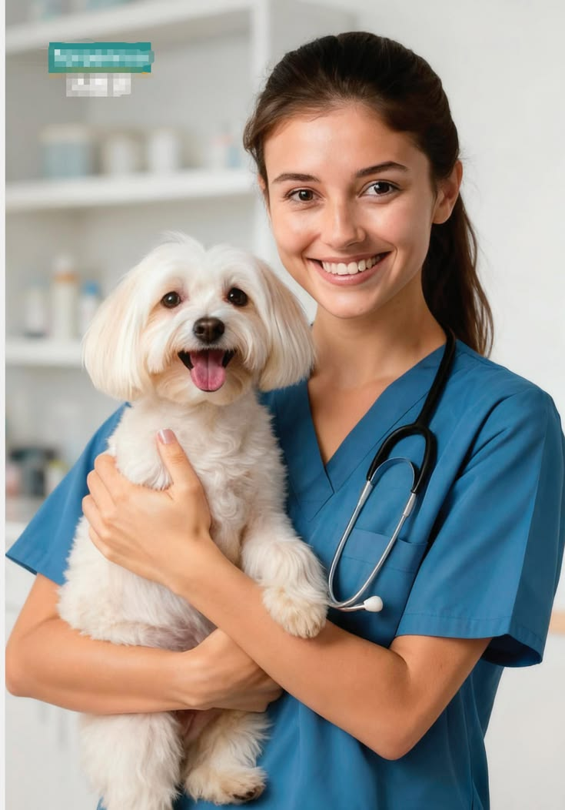
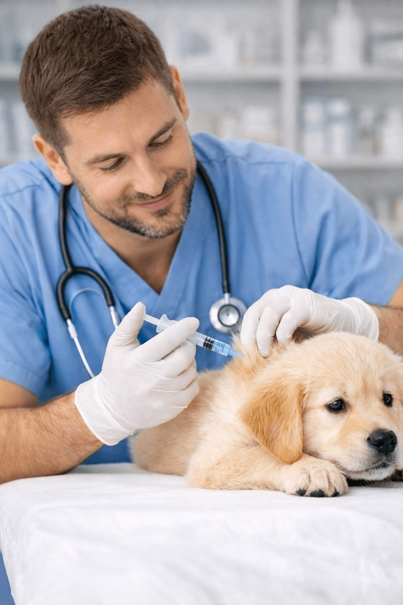
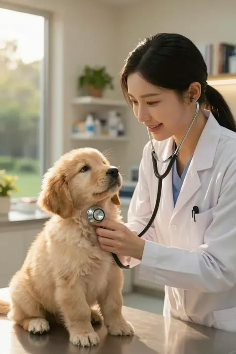

Sobre Veterinaria San Marcos
Más de 15 años brindando salud, bienestar y amor a las mascotas de Rancagua y sus alrededores.
Comprometidos con la salud de tus mascotas desde 2009
Veterinaria San Marcos nació en el corazón de Rancagua con la misión de transformar la atención veterinaria tradicional en una experiencia médica integral, empática y de alta tecnología.
Lo que comenzó como una pequeña consulta de atención primaria ha evolucionado para convertirse en un centro clínico equipado con pabellón quirúrgico, laboratorio clínico propio y servicios de urgencia, manteniendo siempre el trato cálido y personalizado que nos caracteriza.
.jpg)
Nuestra Misión
Proporcionar atención médica veterinaria de máxima excelencia, promoviendo la prevención, la pronta recuperación y la tenencia responsable en nuestra comunidad.
Nuestra Visión
Ser el centro médico veterinario referente en la Región de O'Higgins, destacado por la innovación médica, la digitalización de procesos y la calidad humana.
Nuestros Valores
Compromiso médico, empatía con las familias, transparencia ética en diagnósticos y capacitación continua de todo nuestro equipo.
Nuestro Equipo Profesional
Conoce a los especialistas dedicados al cuidado y bienestar de tus integrantes de cuatro patas.

Dra. Camila Morales
Directora Médica & CirujanaEspecialista en cirugía de tejidos blandos y traumatología con 12 años de experiencia clínica.

Dr. Felipe Soto
Médico Veterinario de CabeceraDiplomado en Medicina Interna de Pequeños Animales y consulta de animales exóticos.

Andrea Rojas
Técnico VeterinarioEncargada de hospitalización, asistencia en pabellón y cuidados postoperatorios.